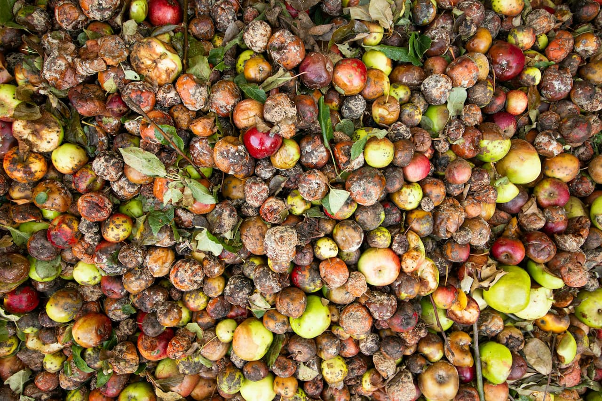

Conheça a missão, o propósito e o impacto desta plataforma comunitária.
Segundo a ONU, cerca de 1,3 bilhão de toneladasde alimentos são desperdiçadas globalmente a cada ano — o equivalente a um terço de tudo que é produzido no mundo para consumo humano. Enquanto isso, mais de 700 milhões de pessoas passam fome.
No Brasil, o cenário é igualmente preocupante. De acordo com dados da EMBRAPA, os brasileiros desperdiçam em média 41 quilos de alimento por pessoa por ano. Padarias descartam pães não vendidos, restaurantes jogam fora sobras do dia, mercados descartam frutas e legumes próximos ao vencimento — e tudo isso acontece enquanto famílias vulneráveis lutam para colocar comida na mesa.
Esse contraste não é apenas uma tragédia social, mas também um problema ambiental grave. A decomposição de alimentos em aterros sanitários gera gás metano, um dos principais contribuintes para o aquecimento global.

O Salve Comidaé uma plataforma digital pensada para encurtar a distância entre quem tem alimento sobrando e quem precisa receber. Funciona como uma ponte direta entre doadores — padarias, restaurantes, mercados, empresas e pessoas físicas — e receptores, que podem ser famílias, ONGs, vizinhos ou qualquer membro da comunidade.
Através de uma interface simples e acessível, qualquer pessoa pode:
Cadastrar alimentosdisponíveis para doação, informando quantidade, localização, validade e condições.
Encontrar doaçõespróximas com filtros intuitivos por categoria, localização e status.
Solicitar alimentoscom poucos cliques, sem burocracia, apenas informando nome e contato.
Combinar a retiradaou entrega diretamente com o doador, de forma humana e direta.
Não é necessário criar conta, pagar nada ou instalar nenhum aplicativo. A plataforma é gratuita, aberta e pensada para ser acessível a todos.
Por trás de cada doação, há uma história. Um padeiro que acorda às quatro da manhã para fazer pães frescos. Um restaurante que sobrou marmita no fim do expediente. Uma família que comprou mais do que precisava e quer ajudar o vizinho.
A solidariedade não precisa ser um gesto grandioso. Muitas vezes, é apenas decidir que um alimento vai servir alguém, em vez de ir para o lixo.
O Salve Comida acredita que comunidades mais solidárias são comunidades mais saudáveis, mais resilientes e mais justas. Quando pessoas se ajudam, a cidade inteira muda.
O Salve Comidaé um protótipo funcional desenvolvido como parte de um projeto acadêmico na área de Sistemas de Informação e Desenvolvimento de Software. O objetivo é demonstrar a viabilidade técnica e social de uma plataforma de doação de alimentos, aplicando conceitos de desenvolvimento web, usabilidade e design centrado no usuário.
A versão atual conta com backend real, autenticação segura de usuários, banco de dados persistente e upload de imagens. O projeto está em constante evolução, com planos de expandir para geolocalização, notificações em tempo real e integração com ONGs parceiras.
Este projeto é fruto de pesquisa sobre impacto social da tecnologia e busca evidenciar que soluções simples, bem executadas, podem gerar transformação real na comunidade.
Com uma infraestrutura real de backend e banco de dados, o Salve Comida poderia evoluir para incluir:
Autenticação segurapara doadores e receptores, com perfis verificados.
Geolocalizaçãopara mostrar doações no mapa em tempo real.
Notificaçõespor e-mail ou WhatsApp quando novos alimentos forem cadastrados.
Dashboard de impactocom quilogramas salvos, famílias atendidas e CO₂ evitado.
Parcerias com ONGse bancos de alimentos para ampliar o alcance.
Aplicativo móvelpara maior acessibilidade.